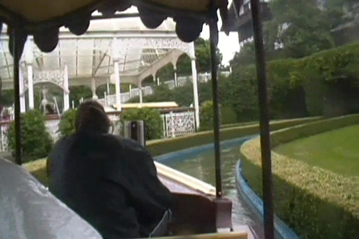
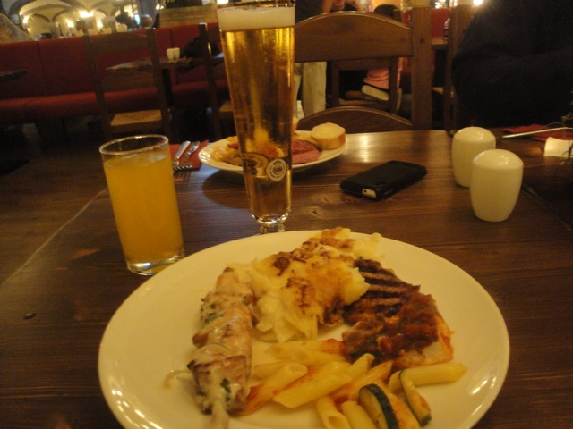

Heide Park is a really great theme park. It's definetly one of the more popular Merlin parks and after visiting this place, I can easily see why. THIS PLACE IS F*CKING AWESOME!!! It has EVERYTHING. It has some great roller coasters, including one of my favorite wooden coasters ever. But this park goes way beyond its coaster collection. It has a wide variety of attractions for everyone to enjoy. There are plenty of fun water rides, some really good flat rides, some crazy and insane playgrounds that litter the park and are just a ton of fun, and on top of all that, this park is just draped in a great atmosphere that really teleports you to another world. It just looks FANTASTIC!!! The Hotel and resort that Heide Park is a part of is a really good resort too. It's all just fantastic. And it's not like they neglect and ignore this. When they built Krake, they actually modified the theming around it by destroying their Statue of Liberty just so the rest of the park could blend in better with the new narrative. I LOVE this. Not only the destroyed Statue of Liberty ruins, but just the sheer effort they put into everything and you can see that on all of the rides. From the boat rides, to the powered coaster, it all looks fantastic. And honestly, it's just a really balanced park. There is something for everyone here at Heide Park. Good roller coasters, good flat rides, good water rides, and just a ton of other really cool stuff. If you are ever up in Northwest Germany, definetly make sure to stop on by and visit Heide Park. You will not be dissapointed.
Here are the reviews of all the Flat Rides at Heide Park. First off, let's talk about the park's star flat ride. Scream. This is the park's Drop Tower, and man. This is a good one. It seems to be a trend here in Europe where a park will have an observation tower and then later, when they want a thrill ride, they decide to just turn the observation tower into a drop tower. That's what they did with Scream and it's a really great ride. The view may not be great, but it's one of the Gyro Drops, as well as one of the bigger drop towers. It's just a ton of fun. All right. Let's move onto the other flat rides. Well, first off, how about we head on over to HUSS land, the little mini-area that contains nothing but HUSS rides. No seriously. In here, there's a Top Spin, an enterprise, a round up, and this really funky flat ride. I think it was called a HUSS Flipper, which is weird, because it doesn't flip at all. It's a fun flat ride and all, but I think that it's pretty much limited to Europe, so it's rare for an American to ride one of these rides. Shame, because it's really fun. That's all the flat rides I rode at Heide Park. They also have a breakdance, a troika, a falling star, some funky flat ride that I never saw and have no idea what the hell it's supposed to be from photos, some chairswings, a pirate ship, and a condor.
Love these giant Gyro Drop Towers.
Dark Rides
All right. If there was one portion of the park where I felt it was a little unbalanced, it would be in the Dark Ride category. There's not exactly a stand out dark ride here. In fact, all of the dark rides here would be, as Cliff likes to call them, "Stupid Boat Rides". Now all of these stupid boat rides end in "Fahrt", because fahrt is German for ride. So a lot of people were riding these rides and laughing at them because of the language translation. This shows you the maturity level of others around me as they all laugh at fart jokes cause by language barriers. Gratchen Fart, Koggen Fart (Not a Dark Ride), and most joked of all, (K)anal Fart. Ha ha. Very funny. You call them Fart Rides, I call them stupid boat rides. And speaking of (K)anal Fa(h)rt, that's the stupid boat ride we rode. It's basically the boat ride version of Grottenblitz, going through the same building and seeing the same theming. Except slower, and in water. All right, but Heide Park could really use a proper dark ride.

Stupid boat ride with an unfortunate name when translated into English. Sorry Germans. =)
Water Rides
Heide Park seems to have an interesting water ride collection, which in a way, isn't necesarry since it seems to always be cloudy at Heide Park. Seriously, it was cloudy and rainy when I went, and it's cloudy and rainy in like 90% of all reports I read on it from other people. But anyways, let's talk about the water ride I rode. The park's log flume, Wild Wasserbahn. Well actually, the park has two log flumes, both named Wild Wasserbahn. Wild Wasserbahn I, and Wild Wasserbahn II. I rode #2, because it is both bigger and better. And yeah. It's a really good log flume. It has some really good miner theming, and the drop is good too. It's actually much bigger than the big drops on a lot of other log flumes, including Heide Park's other log flume, Wild Wasserbahn I. The park also has a rapids ride that I didn't ride. It looks fun and all, I suspect it has some good theming and would be a lot of fun.
Hey. This log flume is fun enough to ride on a cold and gloomy day.
Dining
The dining at Heide Park is pretty good, and that's just the park. It's really freaking good if you eat at the hotel. But first, let's focus on the actual park food I had for lunch for now. One simple word. Donar Kebabs. GOOD GOD!! I LOVE THESE THINGS!!! I've never been to Turkey or even knew about them before coming to Europe. But man. Just man. These things are GOOD!!! I really want to find some Turkish resteraunt in L.A now just so I can have another Donar Kebab. So happy they have them here at Heide Park. I'm not sure about the rest of the dining options, but I'm sure there's some good German food and some typical theme park food. Now let's get to the hotel food, cause that's where things are really good. They served a really nice spread featuring Chicken Kebabs, Ratatoullie, Cheesy Potatos to die for, European Fanta, and Great German Beer. Yeah. It was a really great meal andhighly recommend it to anyone visiting the Port Royal Hotel.

So much good food. =P
Theming and Other Attractions
Here are the reviews of all the other stuff at Heide Park. As far as theming goes, it's actually pretty good. There has this European theming that just looks really good. Yeah, it seems weird that there is European theming for Europe, but hey. If California Adventure can have California theming in California, then this works too. And the rest of the theming is pretty good too. Krake has this GREAT theming that just looks FANTASTIC. Love the ship theming and how much effort they put into it. They freaking destroyed their Statue of Liberty just so it fits in with the Krake story. And I love that. All right. Moving onto other stuff. What else does this park have to offer? One simple words. Slides. Lots and lots of slides. You know about all those really crazy European Slides? Well this one has perhaps the craziest ones of all. Yeah, the other crazy European Slides are great and all, but the ones here are 10 stories tall. Yep. 100 ft slides. Yeah, that's just f*cking crazy. And I love that. I'm not sure if this is still here, but there was a Krake maze that was a ton of fun and enjoyable. And as I've already said, the hotel is really nice and well themed.
Love the bigass slides.
In Conclusion
Heide Park is a really great and fun theme park that has some great roller coasters. They have one of the best wooden coasters on the planet as well as some other really fun steel coasters. But not only that, it also has some great flat rides, some really cool water rides, crazy playgrounds that are really freaking tall, and a great hotel that just brings this great sense of atmosphere to the park. Yeah, it's not the greatest park in the world, but honestly, I'd call Heide Park an underrated park. It is just run so well and has so much fun stuff to do, it's hard not to enjoy the place. It's definetly one of the better Merlin parks, and a place you should definetly check out if you're ever in Germany.
Enthusiast FAQs.
*Are there kiddy coaster restrictions? - Nope. You can ride the kiddy coaster here.